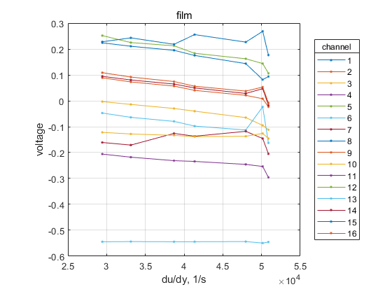
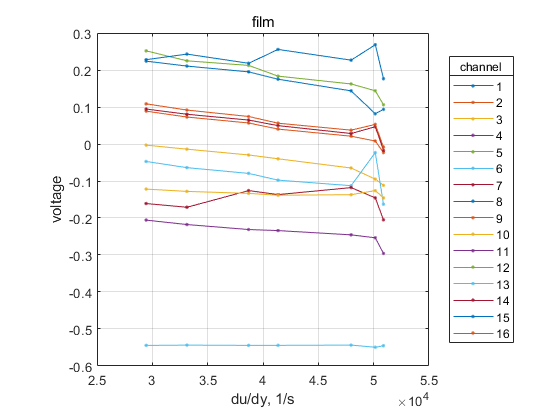

Description
This is a MATLAB function named `calibcta` that performs calibration and analysis of hot-wire/film sensors. Here's a breakdown of the function:
*Function signature*
The function takes two types of input arguments:
1. `varargin`: a variable-length argument list containing sensor data, which can be either `wire` or `film`. 2. `kwargs`: a set of keyword arguments that control the processing and display of the results.
*Keyword arguments*
The function accepts several keyword arguments:
- `sensor`: a character array indicating whether to process `wire` or `film` data.
- `y`: an optional input matrix representing wall positions (default is empty).
- `u0`: an optional input matrix representing inflow velocities (default is empty).
- `index`: an optional integer vector specifying node indices for polynomial fitting (default is 1:2).
- `show`: a logical scalar controlling whether to display results (default is true).
- `docked`: a logical scalar controlling whether to dock the figure window (default is false).
*Processing*
Depending on the value of `sensor`, the function performs different processing steps:
- For `wire` data: + Extracts probe, velocity, and filename from the input arguments. + Reads the file containing the sensor data and converts it to a numerical format. + Writes the processed data back to the file with a tab delimiter. + Calculates the dot by comma replacement in the file contents.
- For `film` data: + Extracts wire and film data from the input arguments. + Calculates mean values for wire and film data. + Sets default values for `yunit` and `u0isloc`. + If `y` is empty, sets it to a default value (1:2). + If `u0` is empty, sets it to the maximum value in the wire data.
*Display*
If `show` is true, the function displays several plots:
- For `wire` data: + Plots velocity profiles with y-axis labels. + Displays title and legend.
- For `film` data: + Plots piecewise linear fits for each channel. + Displays title and legend.
*Output*
The function returns a cell array of fitted curves, which is stored in the first element of `varargout`.
Overall, this function appears to be designed to calibrate and analyze hot-wire/film sensors, with options for displaying results and customizing processing.
Contents
Examples
This section presents several examples of the usage of calibration hot-wire/film CTA
Create calibration file for hot-wire CTA, specify voltage and velocity vector correspondily, save to calib_wire.txt
calibcta("1,44266 1,84532 1,9464 2,06614 2,12695 2,20549 2,24979 2,31243 2,39973 2,47017 2,53081 2,58417 2,60222", ... [0 2.1 3.6 5.8 7.3 9.6 11.2 13.4 17.3 21.3 25.2 29.1 30.4], ... 'docs\src\calibcta\calib_wire.txt')
Calibrate hot-film CTA:
import vertical velocity profiles measured by hot-wire CTA in the vicinity location of hot-film CTA at various inflow veclity in the test section; import hot-film CTA measurements performed same time
load('docs\src\calibcta\calib_film.mat') % dins of wire: 1 - samples, 2 - vertical posisiotn, 3 - inflow velocity; % dins of film: 1 - samples, 2 - sensor channel, 3 - inflow velocity; calib = calibcta(wire, film, sensor = 'film', y = y, index=3:4)
Warning: Removing NaN and Inf from data Warning: 2-channel isn`t calibrated Warning: Removing NaN and Inf from data Warning: 11-channel isn`t calibrated Warning: Removing NaN and Inf from data Warning: 12-channel isn`t calibrated Warning: Removing NaN and Inf from data Warning: 15-channel isn`t calibrated calib = ...
 
